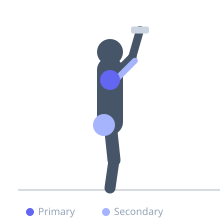
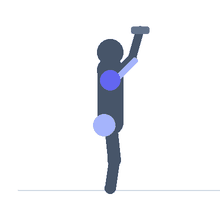

Exercise guide / Single-Arm Dumbbell Push-Press
Single-Arm Dumbbell Push-Press
The single-arm dumbbell push-press uses a dip-and-drive from the legs to initiate upward momentum, then completes the press overhead with one arm. The unilateral variation requires significant core lateral stabilization to prevent the loaded side from dropping the torso, training anti-lateral-flexion core strength alongside the shoulder and triceps pressing musculature. It is an effective power development tool for overhead athletes.
Primary muscles
deltoid anterior
deltoid lateral
Secondary muscles
triceps brachii
gluteus maximus
Stabilizers
erector spinae
transverse abdominis
Equipment
Standard Barbell


Starting position
- Stand with one dumbbell at shoulder height on the working side. Free hand on the hip or at the side. Feet shoulder-width apart.
Setup
- Set up in a neutral stance with the dumbbell resting on the shoulder. Use a weight heavier than you would use for a strict press.
Steps
- Step 1: Dip the knees 10-15 cm, maintaining an upright torso.
- Step 2: Drive upward explosively through the legs.
- Step 3: Use the upward momentum to initiate the dumbbell's upward path.
- Step 4: Complete the press by extending the arm fully overhead.
- Step 5: Lower the dumbbell under control back to the shoulder. Repeat, then switch sides.
Coaching cues
- Dip straight down — no forward lean
- Drive with the legs, finish with the arm
- Stay tall — no lean to the side
Breathing
- Inhale and brace before the dip. Exhale explosively through the drive and press.
Range of motion
- Shoulder height to full overhead lockout.
Tempo
- Explosive drive, 2s lower
Common mistakes
- Lateral torso lean toward the working side — maintain upright position
- Too deep a dip — 10-15 cm is sufficient; excessive depth loses power transfer
Safety
- Learn the bilateral push-press first before the unilateral version
- High demand on the core — build anti-lateral flexion strength before heavy loading
Training
- power: 3–6 reps
- hypertrophy: 6–10 reps
- power: 3–5 sets
- Rest: {'power': 180, 'hypertrophy': 90}